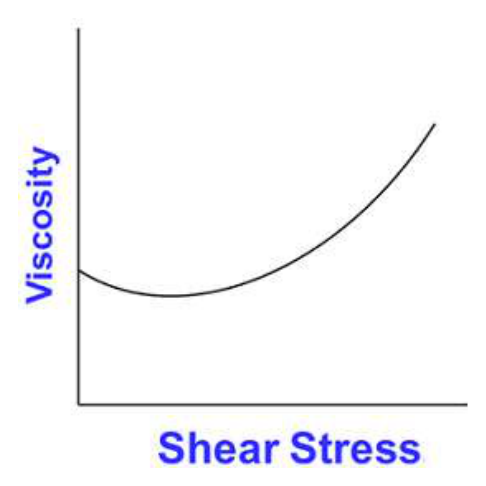
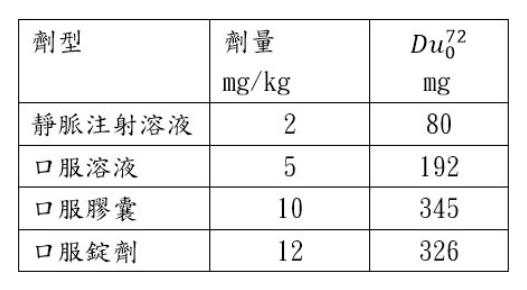
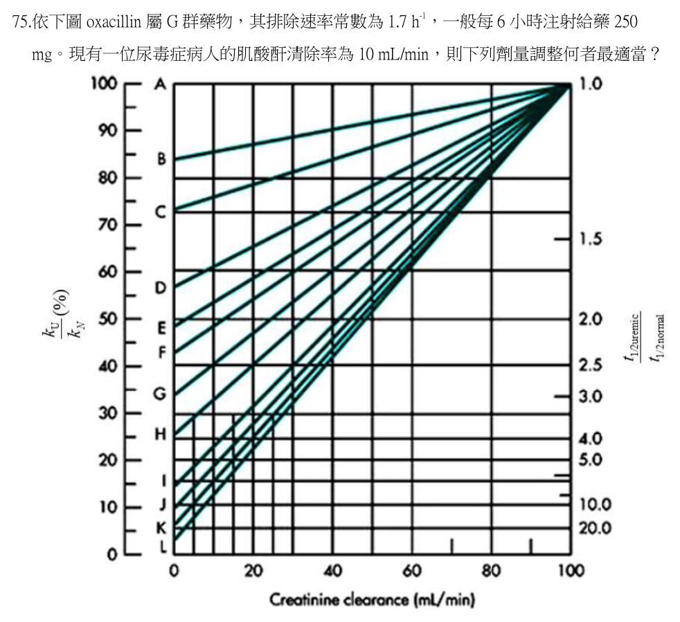
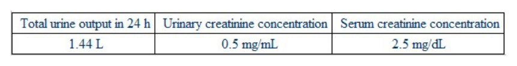

第 1 題待校
某藥品Q10值為2，其在冰箱（5℃）的架儲期為96 小時，估計其在室溫下（25℃）的架儲期為若干小時？
- （A）6
- （B）12
- （C）24
- （D）48
答案：（C）
這一頁是民國 112 年第 1 次藥師藥劑學與生物藥劑學的整份歷屆試題，共 80 題，題目與標準答案出自考選部「國家考試試題及測驗式試題答案」開放資料，其中 70 題附有詳解。以下逐題列出題幹、選項與答案；要計時作答或記錄成績，請用線上練習。
考選部原始場次代碼：112020
線上作答這一科 →第 1 題待校
答案：（C）
答案：（C）
正解：前綴 deci- 表示 10^-1，因此 1 dg = 10^-1 g = 0.1 g；單位的量級與（C）完全相符，故選 C。
A：1 nm = 10^-9 m = 10^-7 cm，不是 10^-5 cm；換算長度時要先固定以 m 或 cm 為基準，故不選。
B：1 μL = 10^-6 L = 10^-3 mL，不是 10^-2 mL；μ 與 m 相差 10^3 倍，故非答案。
D：1 cP = 0.01 poise，所以 1 poise = 100 cP；（D）把 poise 與 centipoise 的換算方向顛倒，故不選。
本題考點：SI 字首（SI prefixes）——遇到 d、m、μ、n 時先改寫成 10 的冪次，再進行單位相除或相乘；黏度單位（poise and centipoise）——centi- 表示 10^-2，因此由 poise 換成 cP 時數值要乘以 100。
答案：（A）
正解：酏劑的判別核心是供內服、澄明、具甜味的含乙醇水溶液；（A）把用途改成外用且允許混濁，兩項都與劑型特徵相反，故選 A。
B：酏劑可製成含藥產品，也可作具甜味與芳香的賦形載體，不必一定含有具療效的藥物，故非答案。
C：含乙醇製劑應使用緊密容器，以減少乙醇揮發與組成改變；此敘述符合貯藏要求，故不選。
D：製備芳香酏時採用複方橙皮醑作芳香組成，屬該製備法的描述，故非答案。
本題考點：酏劑（elixirs）——先用內服、澄明、甜味與含乙醇四項辨識，任一反向特徵即可排除；含醇製劑貯藏（storage of alcoholic preparations）——有揮發性溶媒時優先判斷容器是否能維持濃度。
第 4 題待校
答案：（A）
答案：（C）
正解：醑劑以乙醇溶解揮發性成分，遇水後溶媒組成改變容易使成分析出而混濁；因此過濾前以酒精潤濕濾紙可避免額外水分造成再混濁，故選 C。
A：乙醇對揮發油的溶解力高於水，故醑劑所含揮發油濃度通常高於芳香水劑，不是較低，故不選。
B：量筒中的水使揮發性成分溶解度下降而析出，混濁的主因是溶媒比例改變，不是內容物水解，故非答案。
D：醑劑為高醇濃度製劑，醇含量通常高於 30%；（D）將其說成通常少於 30%，與此劑型設計不符，故不選。
本題考點：醑劑（spirits）——含揮發油的高醇溶液遇水會降低溶解度，看到混濁先判斷析出而非水解；過濾操作（filtration of alcoholic preparations）——濾材先以相容溶媒潤濕，可避免濾材帶入少量不相容液體。
答案：（A）
正解：Burow's solution 在藥劑學命名上對應的是乙酸鋁溶液（aluminum acetate topical solution），而不是次乙酸鋁溶液（aluminum subacetate topical solution）；次乙酸鋁溶液是製備乙酸鋁溶液的前驅製劑，兩者不能互稱。（A）把 Burow's solution 當成次乙酸鋁溶液的別名，別名對應錯誤，故選 A。
B：硫酸鋁、乙酸與沉澱性碳酸鈣反應可製得次乙酸鋁相關製劑，這與該局部製劑的經典製備概念相符，故非答案。
C：配方加入 0.9% 硼酸可幫助維持製劑穩定，屬此製劑的配方敘述，故不選。
D：次乙酸鋁溶液用於局部外用，可作洗劑或濕敷劑，符合其局部收斂用途，故非答案。
本題考點：次乙酸鋁溶液（aluminum subacetate topical solution）——遇到製劑別名時須先確認該教材採用的命名範圍，名稱近似不必然能判成錯誤；局部收斂製劑（topical astringent preparations）——從原料反應、安定劑與濕敷用途三者交叉判讀，而非只憑別名作答。
答案：（C）
正解：原生皂法中鈣肥皂偏親油，形成的連續相是油相，故（C）把鈣肥皂說成 o/w 乳劑是錯誤的。官方答案為 C；惟標準濕膠法的 acacia 通常先與水相形成膠漿，再逐步加入油相，故（B）對內、外相的敘述亦有判讀爭點，故選 C。
A：乾膠法需在研缽中充分研和油、膠與水，Wedgwood 研缽的粗糙表面有利研磨與乳化，故非答案。
B：標準濕膠法是先以 acacia 與水相研磨成膠漿，再逐步加入油相；就一般 o/w 乳劑而言，水相為外相、油相為內相。（B）寫成 acacia 先分散於內相、再加入外相，恰與此順序相反，其敘述本身亦不成立，因此本題除官方答案外另有一個可判為錯誤的選項，屬雙答案爭點。
D：乾膠法又稱大陸法，濕膠法又稱英國法，兩種別名與其製備順序的配對正確，故不選。
本題考點：原生皂法（in situ soap method）——先看生成的皂偏親水或親油；鈣肥皂偏親油時應判為 w/o；濕膠法（wet gum method）——acacia 先與水相形成膠漿再加油，相別名稱若與此步驟衝突，須警覺選項可能有歧義。
答案：（C）
正解：計量型吸入劑每次提供的是定量、可快速送入呼吸道的藥物，並非以持續釋放為主要設計；（C）不是其主要優點，故選 C。
A：藥物經肺部吸收可避開腸胃道吸收與肝臟首渡代謝，故避免 first-pass effect 是吸入給藥的優點，非答案。
B：局部投藥可使達到治療部位所需的全身暴露較低，因而有減少全身性藥物不良反應的優勢，故不選。
D：肺部交換面積大且血流豐富，吸入後通常可快速起效；快速作用是計量型吸入劑的重要優點，故非答案。
本題考點：計量型吸入劑（metered-dose inhaler）——以定量、快速且局部遞送為判準，不把緩釋系統的優點套用進來；首渡效應（first-pass effect）——非經口腸吸收的途徑可避開首次肝臟代謝，判斷時要與口服途徑對照。
答案：（C）
正解：水性經口腔吸入劑直接接觸呼吸道，無菌性與滲透壓都會影響安全性；（C）使用經滅菌包裝的注射用水或無菌等滲壓氯化鈉溶液，最符合配方要求，故選 C。
A：有效成分的水溶性本身不能直接推論會刺激肺部；刺激性還要看酸鹼度、滲透壓與添加物等條件，故不選。
B：吸入液的酸鹼度應兼顧呼吸道耐受性與藥物安定性，不能以偏酸性作為一律促進吸收的原則，故非答案。
D：防腐劑不是絕對不得使用；是否加入須依製劑型態、微生物風險與呼吸道相容性評估，因此絕對化敘述不適當，故不選。
本題考點：吸入液品質（inhalation solution quality）——水性製劑先檢查無菌性、滲透壓與呼吸道相容性；肺部刺激性（pulmonary irritation）——不能只憑溶解度判斷，須分開評估 pH、滲透壓與賦形劑。
| Chemical name | 分子量 | 飽和蒸氣壓（21℃） |
|---|---|---|
| dichlorodifluoromethane | 120.9 | 84.9 |
| tetrafluoroethane | 102 | 71.1 |
答案：（D）
答案：（B）
正解：電解質提供離子後可壓縮粒子周圍的電雙層、降低 zeta potential 與 electrical barrier，使粒子在可控制的程度下形成 flocculation，故選 B。
A：助懸劑主要靠提高分散媒黏度或形成結構化載體來減緩沉降，並非直接降低粒子間的電性障礙，故不選。
C：稠化劑的主要作用也是增加黏度、降低沉降速度；它不以改變表面電荷來促進 flocculation，故非答案。
D：濕潤劑降低固體粒子與液體間的界面張力，以利潤濕與分散，不是降低粒子彼此 electrical barrier 的方法，故不選。
本題考點：絮凝（flocculation）——題幹若出現降低 electrical barrier，先聯想到降低 zeta potential 的電解質；懸液安定性（suspension stability）——助懸、稠化、潤濕分別管沉降、黏度與分散，不能和電性絮凝混用。
答案：（B）
正解：市售懸液劑的分散相需兼顧可重分散與不致過度粗糙，粒徑大多落在 1-50 μm；（B）符合一般懸液劑的粒徑範圍，故選 B。
A：小於 1 μm 的粒子已接近膠體分散系統的範圍，與一般粗分散型懸液劑不同，故不選。
C：50-100 μm 的粒子相對過大，容易有沉降加快與粒子粗糙的問題，不是市售懸液劑分散相最常見的區間，故非答案。
D：100-150 μm 的粒徑更大，會增加沉降、口感或給藥通路阻塞的風險，故不選。
本題考點：懸液劑粒徑（suspension particle size）——一般懸液劑先以 1-50 μm 作為判斷範圍，小於此範圍要想到膠體；粗分散系統（coarse dispersion）——粒徑變大會加重沉降與粗糙感，不能只看是否仍為固體分散。

答案：（A）
正解：圖中顯示黏度（viscosity）隨剪應力（shear stress）增加而上升——曲線先呈些微下降，隨後隨剪應力增大而明顯爬升，這正是dilatant（膨脹性、剪切增稠）流體的典型流變曲線：施加的剪切力愈大，粒子間排列愈紊亂、內部摩擦阻力愈大，黏度反而隨之上升，故選A。
B：elastic描述的是材料受力後儲存能量、卸力後回彈變形的彈性特性，並非以黏度對剪應力作圖所呈現的流動行為，與本圖所繪的座標軸意義不符。
C：Newtonian流體的黏度不隨剪應力或剪切速率改變而變化，圖上應呈一條水平線，與圖中黏度隨剪應力上升而明顯增加的走勢不符。
D：pseudoplastic（假塑性、剪切稀化）流體的黏度應隨剪應力增加而下降，走勢與本圖相反。
本題考點：非牛頓流體的流變分類（dilatant、pseudoplastic、Newtonian的區辨）——判準是黏度隨剪應力（或剪切速率）上升時是增大還是減小：增大為dilatant、減小為pseudoplastic、不變為Newtonian；乳劑經搖動後的流變行為——高分散相含量之懸浮液或乳劑常因粒子間排列受剪切力擾動而呈現剪切增稠特性。
答案：（C）
正解：Spans 是 sorbitan 與脂肪酸形成的非離子界面活性劑，分類即為 sorbitan esters，故選 C。
A：Brij 為 polyoxyethylene alkyl ethers，核心分類是聚氧乙烯烷基醚，不是 sorbitan esters，故不選。
B：Myrj 為 polyethylene glycol stearates，依其聚乙二醇硬脂酸酯結構分類，故非答案。
D：Tween 雖含 sorbitan 部分，但完整分類為 polyoxyethylene sorbitan esters；題目所問的是未聚氧乙烯化的 sorbitan esters，故不選。
本題考點：非離子界面活性劑（nonionic surfactants）——先看親水基是否加上 polyoxyethylene，再區分 Span 與 Tween；sorbitan esters——看到 Spans 時直接連結 sorbitan 脂肪酸酯，不與 Brij、Myrj 的聚氧乙烯結構混淆。
答案：（D）
正解：以可可脂為基劑時，尿道栓劑重量須依使用對象與模具容量設計，不能一概說比陰道栓劑重；（D）的絕對比較不成立，故選 D。
A：陰道栓劑可製成球形、卵形或圓錐形，以配合陰道給藥與留置需求；此敘述正確，故非答案。
B：甘油明膠基劑較可可脂更常用於陰道栓劑，能配合陰道局部給藥的需求，故不選。
C：陰道栓劑的英文別名為 pessaries，名稱與給藥部位相符，故非答案。
本題考點：栓劑規格（suppository dosage forms）——比較重量時要先分直腸、陰道與尿道途徑，以及相應模具與使用對象；陰道栓劑（pessaries）——看到其別名或常用基劑時，須和尿道栓劑的規格分開判斷。
答案：（B）
正解：ciprofloxacin ophthalmic ointment 的一般檢查著重無菌與眼部使用安全；（B）重金屬檢查不是題示製劑所列的一般檢查項目，故選 B。
A：眼用軟膏須做無菌試驗，以避免將微生物直接帶入眼部；此為一般檢查的必要方向，故非答案。
C：最低內容量試驗用來確認每一容器實際提供的製劑量，屬包裝製劑的品質控制，故不選。
D：金屬粒子可能造成眼部機械性傷害，眼用軟膏須檢查金屬粒子，故非答案。
本題考點：眼用軟膏一般檢查（ophthalmic ointment tests）——先以無菌、內容量與可傷害眼部的異物作為判斷軸；成品與原料檢驗（finished-product versus raw-material testing）——重金屬等項目不能因是品質試驗就直接套入每一眼用成品的一般檢查。
答案：（C）
正解：親水軟膏組成中採用的是 propylene glycol（丙二醇），不是 ethylene glycol（乙二醇）；因此（C）為不包含的成分，故選 C。
A：白軟石蠟提供親水軟膏的油性基質部分，是配方成分之一，故非答案。
B：十八醇可協助形成軟膏所需的稠度與乳化結構，屬親水軟膏配方成分，故不選。
D：水構成親水軟膏的水相，與界面活性劑及其他成分共同形成可吸水的基劑，故非答案。
本題考點：親水軟膏（hydrophilic ointment）——先分辨油相、水相與乳化成分，再逐一核對配方；乙二醇與丙二醇（ethylene glycol versus propylene glycol）——名稱只差一字但化合物不同，看到 glycol 時要先核對碳數再作答。
答案：（B）
正解：polyethylene glycol ointment 為水溶性基劑，可在清水中溶解或分散，最容易以清水洗除，故選 B。
A：hydrophilic petrolatum 雖可吸收部分水分，但本質仍為油性吸收性基劑，不會像水溶性基劑般直接被清水洗除，故不選。
C：Plastibase 為油性凝膠基劑，與水的相容性低，清洗時不如 polyethylene glycol ointment 容易，故非答案。
D：Aquabase 為乳化型基劑，雖比純油性基劑易洗，但仍含油相；相較全水溶性的（B），不是最容易以清水洗除者，故不選。
本題考點：軟膏基劑分類（ointment bases）——先分水溶性、乳化型、吸收性與油性基劑，題目問清水洗除時優先選水溶性；polyethylene glycol ointment——看到 PEG 類基劑時，以不含油相、易被水移除作為判準。
答案：（D）
正解：可可脂的主要不飽和脂肪酸是（D）oleic acid，題目所列成分中以它作為最多者。可可脂的脂肪酸組成會因原料來源略有變動，但藥劑學上辨識其性質時，oleic acid 與 palmitic acid、stearic acid 並列為主要脂肪酸，故選 D。
A：月桂酸（lauric acid）是中鏈飽和脂肪酸，並非可可脂的主要脂肪酸；它較常用來辨識含月桂酸較高的植物油脂。
B：棕櫚酸（palmitic acid）確為可可脂的重要飽和脂肪酸之一，但不是本題所問的最多者。分辨關鍵在可可脂的主要單元酸是 oleic acid，而非只看是否為飽和脂肪酸。
C：硬脂酸（stearic acid）在可可脂中含量也高，並與 oleic acid 共同影響其熔融性；但本題的組成判別仍以（D）oleic acid 為答案。
本題考點：可可脂脂肪酸組成（cocoa butter fatty-acid composition）——辨識可可脂時，將 oleic acid、palmitic acid 與 stearic acid 視為主要成分，再依題目所問的相對含量判斷；栓劑基劑（suppository base）——判讀脂質基劑的熔融與硬度時，要連結其脂肪酸與三酸甘油酯組成，不以單一飽和脂肪酸推論。
答案：（D）
正解：Adhesive tape 是將藥物黏附於背襯材料、供外用貼敷的製劑，劑型分類屬（D）plasters。其關鍵特徵是固體貼片能貼附皮膚並在局部維持藥物接觸，不是以半固體塗抹方式使用，故選 D。
A：gels 是以高分子網狀結構形成的半固體製劑，通常由容器擠出後塗於皮膚或黏膜，沒有貼片的背襯與黏著結構。
B：creams 為乳劑型半固體外用製劑，水相與油相分散後塗布使用；它不像（D）plasters 以完整片狀材料貼附。
C：pastes 的固體粉末含量高、質地較稠，主要用於覆蓋或保護皮膚表面；雖可有黏附性，仍不是 adhesive tape 的劑型分類。
本題考點：貼敷劑（plasters）——看到背襯、藥物層與黏著貼附皮膚的描述時，判為 plasters；半固體外用製劑（semisolid topical dosage forms）——以是否需由容器塗布、是否具有片狀背襯，區分 gels、creams、pastes 與貼敷劑。
答案：（A）
正解：題目列出 stratum lucidum，採厚皮膚的五層分類；經皮給藥由皮膚外表向內穿透時，依序為 stratum corneum、stratum lucidum、stratum granulosum、stratum spinosum、stratum germinativum，即①②③④⑤。stratum corneum 是最外層且為主要屏障，往深層才依序到基底層，故選 A。
B：①③②④⑤把（②）stratum lucidum 放在（③）stratum granulosum 的深側，但透明層位於顆粒層之外，順序顛倒。
C：①④③⑤②把（④）stratum spinosum 提到顆粒層之外，且把（②）stratum lucidum 放到最深層，兩處都不符表皮層次。
D：②①④③⑤以（②）stratum lucidum 為最外層，忽略最外面必先經過角質層；經皮吸收首先面對的是 stratum corneum。
本題考點：表皮分層（epidermal layers）——題目列 stratum lucidum 時，採厚皮膚由外向內的角質層、透明層、顆粒層、棘狀層、基底層，再套入穿透方向；經皮吸收屏障（transdermal absorption barrier）——題目問外用藥先遇到哪一層時，優先判定 stratum corneum。
答案：（A）
正解：祕魯香膠（Peru balsam）屬黏稠樹脂性物質，調製軟膏前需先以（A）蓖麻油研合，使其先均勻分散並利於後續混入基劑。這是先處理黏稠或樹脂性成分、再等量遞增混合法的應用，故選 A。
B：甜杏油雖也是油性賦形劑，但不是祕魯香膠於本題所指定的預先研合成分；不能只因同屬植物油便互換。
C：棉籽油可作油性基劑成分，卻不具本題中與祕魯香膠預先研合的標準配伍用途。
D：礦物油為石油來源液體油性基劑，與蓖麻油的極性及分散特性不同；本題的調製步驟指定的是（A）蓖麻油。
本題考點：軟膏調製（ointment compounding）——遇到黏稠樹脂性藥物時，先用相容的液體成分研合，再逐步混入基劑；等量遞增混合法（geometric dilution）——少量藥物分散於大量基劑時，依近似等量逐次加入可避免局部濃度不均。
答案：（C）
正解：噴霧乾燥時提高乾燥溫度會加快水分移除，使液滴較快形成乾燥、孔隙較多的顆粒；這類顆粒通常較脆，因而較易粉碎。題目問的是溫度提高後最適當的顆粒性質變化，故選 C。
A：粉末黏結與顆粒變大較常見於乾燥不足、表面仍黏或後段受潮的情況；提高乾燥溫度本身不是以增加黏結為典型結果。
B：乾燥溫度會影響蒸發速度、孔隙與顆粒結構，不能視為完全不影響顆粒性質。
D：沉降速度與粒徑、密度及介質阻力相關；（D）將粉末黏結與沉降加快連在一起，沒有說明高乾燥溫度造成黏結的合理機制。
本題考點：噴霧乾燥（spray drying）——判斷溫度效應時，先連結蒸發速度、殼層形成與顆粒孔隙，再推論脆性；顆粒機械性質（particle friability）——孔隙增加或結構較鬆的顆粒，通常較易受外力粉碎。
答案：（C）
正解：疏水性藥物在腸液中結塊時，需要的是促進崩散、吸水或潤濕的輔助成分。（C）methylcellulose 主要作為增稠或成膜的高分子，水合後可增加黏稠度，並非用來減少疏水性藥物結塊與促進擴散，故選 C。
A：sodium starch glycolate 是超級崩散劑，吸水膨潤可使膠囊內容物更快鬆散，具有題目所需的減少結塊效果。
B：sodium lauryl sulfate 是界面活性劑，可改善疏水性藥物的潤濕與分散；它看似不是崩散劑，卻能從潤濕機制減少團聚。
D：croscarmellose 是超級崩散劑，藉吸水與毛細作用促進內容物分散，符合本題欲改善腸中結塊的目的。
本題考點：疏水性藥物潤濕（wetting of hydrophobic drugs）——遇到腸液中團聚時，選能降低界面張力或促進水分進入的界面活性劑與崩散劑；超級崩散劑（superdisintegrants）——sodium starch glycolate 與 croscarmellose 用於加速崩散，不與增稠成膜用的 methylcellulose 混為一談。
本題送分，無標準答案
正解：本題以 # 標示官方答案，代表不以單一選項判定。就硬膠囊劑的製劑原則而言，（A）在殼材相容且採適當封合時，可填充某些非水性液體，是最具合理性的候選；但本題不應自行改寫成單一官方字母，故本題不選單一字母。
A：硬膠囊通常用於粉末或顆粒，但在適當製程與封合條件下可充填某些脂肪油或揮發油；這也是本題容易形成單一答案爭議的原因。
B：適當充填應使內容物置於膠囊本體而保留膠囊蓋的套合空間，不是填滿至膠囊蓋。
C：膠囊殼的含水量需維持足以保有彈性的範圍；題述數值是否適用於硬膠囊殼，須與殼材種類及規格一併判讀，不能直接當成通則。
D：明膠與水是硬膠囊殼的基本組成，但蔗糖與甘油並非一般硬膠囊殼透明性的必要組成；塑化劑的使用須區分硬、軟膠囊。
本題考點：硬膠囊劑（hard gelatin capsules）——先判斷內容物與膠囊殼是否相容、是否需要封合，再判定液體充填可否成立；膠囊殼組成（capsule-shell composition）——區分硬膠囊的明膠殼與軟膠囊常見的塑化劑設計，不能由透明外觀直接推定所有添加物。
答案：（C）
正解：對熱不安定藥品應減少研磨時摩擦所產生的熱，並利用氣流帶走熱量。（C）流能磨（fluid-energy mill）以高速氣流使粒子互相碰撞，研磨區可有冷卻效果，因此最適合熱敏感藥品，故選 C。
A：錘擊式粉碎機（impact crushers）以高速撞擊破碎，局部機械能容易轉為熱，不是熱不安定物質的最佳選擇。
B：顎式粉碎機（jaw crusher）主要適於粗碎，靠兩顎擠壓破碎；其粒徑控制與熱敏感細粉製備均不如流能磨。
D：球磨機（ball mill）靠研磨球長時間撞擊與摩擦粉碎，容易累積熱量，對熱不安定藥品較不利。
本題考點：流能磨（fluid-energy mill）——題幹出現熱敏感與細粉化時，優先選以氣流碰撞研磨且可帶走熱量的設備；粉碎熱（milling heat）——靠長時間摩擦或金屬撞擊的設備較易升溫，須與氣流式研磨區分。
答案：（C）
正解：發泡顆粒劑溶於水時產生二氧化碳，可改善鹽類藥物入口時的味道，因此（C）對鹽類性藥品通常具矯味作用最適當。酸與碳酸氫鹽反應的氣泡與酸味能減少鹹苦感，故選 C。
A：發泡顆粒容易受潮而提前反應，應置於防潮、密閉且適當開啟的容器，不宜以易開啟廣口容器作為貯存原則。
B：基本組成可含酒石酸、檸檬酸與碳酸氫鈉；（B）寫成碳酸鈉，少了產生發泡反應時常用的碳酸氫鹽判別。
D：發泡顆粒通常先在水中完全溶解後飲用，主成分以可溶或可形成適當溶液者較合目的，不以難溶性藥品為典型。
本題考點：發泡顆粒劑（effervescent granules）——看見有機酸與碳酸氫鹽遇水產氣時，判為發泡系統；矯味（taste masking）——鹽類藥物的異味可藉酸味與二氧化碳氣泡改善，但前提是製劑須維持乾燥避免提前反應。
答案：（C）
正解：顆粒劑雖比同體積粉末有較小的外部表面積，卻具有粒間孔隙，接觸液體時水可滲入並取代空氣，通常反而較容易潤濕、分散後製成溶液劑或懸浮劑。（C）把表面積較小直接推成不易潤濕，忽略了顆粒孔隙與潤濕行為，最不適當，故選 C。
A：顆粒劑的比表面積較小，與空氣中水分接觸的面積較少，靜置時通常較不易結塊或硬化，因此此敘述適當。
B：顆粒劑相較細散劑暴露面積較小，通常較不易吸濕，故在大氣中較不易受潮的說法可成立。
D：顆粒劑受液體潤濕後可快速分散，且粉塵較少，通常比散劑容易進一步製成溶液劑或懸浮劑；這正與（C）的錯誤推論相反。
本題考點：顆粒劑與散劑（granules versus powders）——比較安定性時看比表面積，顆粒通常較不易吸濕與結塊；顆粒潤濕（granule wetting）——判斷再分散性時，不能只看幾何表面積，還要看粒間孔隙是否能讓液體滲入。
答案：（D）
正解：於規定間隔分次釋離藥品的錠劑，其品質重點是釋放速率與釋放曲線，而不是要求快速崩散；若完全以一般崩散度標準判定，反而違背緩釋設計。（D）extended-release dosage forms 不需要執行一般崩散度試驗，故選 D。
A：延遲釋放腸溶膜衣錠需要確認在酸性環境不崩散、轉入適當介質後能崩散或釋放，因此仍有崩散相關的檢驗要求。
B：舌下錠的治療目標是迅速在舌下崩散並吸收，崩散時間是其劑型性能的重要判定。
C：口腔片須依其口腔內使用目的評估崩散或溶解表現，不能因放置部位在口腔便排除崩散度要求。
本題考點：緩釋製劑（extended-release dosage forms）——題幹強調分次、長時間釋放時，以 dissolution 或 release profile 評估，不以快速崩散為目標；腸溶錠崩散（enteric-coated tablet disintegration）——判斷腸溶設計時，必須同時看酸中耐受與轉換介質後的崩散或釋放。
答案：（C）
正解：lozenge tablet 以高程度壓錠製成，硬度高且在口腔中緩慢溶解，讓活性成分局部或逐漸釋出。題幹同時給出高壓錠與緩慢溶解兩個線索，正是（C）lozenge tablet 的特徵，故選 C。
A：enteric-coated granular tablet 的主要設計是耐胃酸、到腸道後釋放，判準是腸溶包衣與 pH，而非在口腔高壓錠後緩慢溶解。
B：chewable tablet 是供咀嚼後吞服的錠劑，需能承受咀嚼而非刻意製成在口腔緩慢溶解的高硬度錠。
D：sublingual tablet 要在舌下快速崩散與吸收以迅速起效，釋放速度與（C）lozenge tablet 相反。
本題考點：口含錠（lozenge tablet）——看到高硬度、口腔內緩慢溶解與局部作用時，判為 lozenge；舌下錠（sublingual tablet）——看到快速崩散、快速吸收與迅速療效時，與 lozenge 的緩慢釋放作相反判讀。
答案：（A）
正解：舌下錠放在舌下後需快速崩散，讓藥物迅速經口腔黏膜吸收並達到療效；相較之下，口含錠常在頰黏膜處較緩慢地溶解或黏附。因此（A）需要快速崩散而迅速達到療效是舌下錠的主要特性，故選 A。
B：腸溶衣的目的是通過胃後在腸道釋放，與在口腔吸收的舌下錠相衝突。
C：矯味可提升口腔製劑接受度，但不是區分舌下錠與口含錠的主要特性；分辨關鍵在釋放與吸收速度。
D：高硬度以耐受咀嚼力是咀嚼錠的設計考量，舌下錠反而必須能在短時間內崩散。
本題考點：舌下吸收（sublingual absorption）——題幹出現迅速起效與舌下放置時，選快速崩散、經黏膜吸收的設計；口腔黏膜製劑（buccal dosage forms）——分辨舌下與頰黏膜製劑時，先比較是否追求快速吸收或較長時間局部停留。
答案：（B）
正解：IVIVC 最容易建立於體內吸收主要受溶離速率限制的藥物。（B）BCS class 2 具有低溶解度、高通透性，腸道通透性不是主要瓶頸，體外溶離曲線因而較能預測體內吸收，故選 B。
A：BCS class 1 為高溶解度、高通透性，溶離通常很快，體外溶離差異不一定能轉化為可辨識的體內差異。
C：BCS class 3 是高溶解度、低通透性，吸收較受膜通透性限制；只量體外溶離不足以預測體內吸收。
D：BCS class 4 同時低溶解度、低通透性，溶離與通透性都可能限制吸收，變異來源多，最不利於建立單純 IVIVC。
本題考點：生物藥劑學分類系統（biopharmaceutics classification system, BCS）——先判斷溶解度與通透性何者限制吸收；體外體內相關性（in vitro-in vivo correlation, IVIVC）——當溶離是主要速率限制步驟時，體外溶離資料最有機會預測體內表現。
答案：（D）
正解：外來病原體先由（②）macrophage 吞噬、處理並呈現抗原，再活化（③）T cells，最後由輔助性 T 細胞協助（①）B cells 產生特異性體液免疫反應。因此正確順序是②③①，故選 D。
A：①②③把（①）B cells 放在抗原被巨噬細胞處理之前，缺少啟動特異性免疫所需的抗原呈現步驟。
B：①③②同樣以（①）B cells 開始，且把巨噬細胞置於 T 細胞之後，不符由先天辨識到適應性活化的流程。
C：③②①讓（③）T cells 先於 macrophage 的抗原處理而啟動；分辨關鍵在 T 細胞活化需要先接受抗原呈現訊號。
本題考點：抗原呈現（antigen presentation）——題目問免疫反應順序時，先放入吞噬細胞處理與呈現抗原；T 細胞與 B 細胞合作（T-cell-B-cell cooperation）——將 T cells 的活化置於 B cells 產生特異性抗體反應之前。
答案：（A）
正解：MMR 疫苗將抗原帶入人體，使免疫系統自行產生特異性抗體與免疫記憶，屬於（A）主動免疫。判準是抗體是否由接種者自身產生，而不是疫苗是否經注射給與，故選 A。
B：被動免疫是直接給與已形成的抗體，例如免疫球蛋白；MMR 疫苗提供的是抗原，不是現成抗體。
C：種族免疫不是依接種者自身是否產生抗體來分類的標準用語，不能用來描述單次 MMR 接種的免疫機制。
D：個體免疫僅泛指個人具有免疫狀態，不能區分抗原刺激自身產生反應的主動免疫與直接取得抗體的被動免疫。
本題考點：主動免疫（active immunity）——看到疫苗刺激自身產生抗體與記憶時，判為主動免疫；被動免疫（passive immunity）——看到直接輸注或注射現成抗體時，才判為被動免疫。
答案：（C）
正解：依數性質只取決於溶質粒子數。增加藥品濃度會使蒸氣壓下降、沸點上升、滲透壓上升，並使凝固點下降；因此（C）increase in freezing point 的方向相反，是錯誤敘述，故選 C。
A：溶質粒子增加會降低溶媒逸出液面的傾向，所以 lowering vapor pressure 是正確的依數性質變化。
B：蒸氣壓下降後，需較高溫度才達外界壓力而沸騰，故 increase in boiling point 正確。
D：溶質粒子濃度越高，跨半透膜維持平衡所需的壓力越大，故 increase in osmotic pressure 正確。
本題考點：依數性質（colligative properties）——濃度增加時記成蒸氣壓下降、沸點上升、凝固點下降、滲透壓上升；凝固點下降（freezing-point depression）——看到溶質增加卻寫凝固點上升時，直接判為方向相反。
答案：（A）
正解：逐一核對每個敘述的具體數值與定義是否符合現行規範。HEPA filter 的標準效率定義即為可過濾至少 99.99％（或依標準略有 99.97％／99.99％之別）粒徑大於或等於 0.3 μm 的粒子，這項敘述符合對 HEPA filter 效率的公認定義，故選 A。
B：中華藥典對無菌試驗操作環境的要求通常對應更嚴格的等級（如 Class 100/ISO 5），並非 Class 1,000 這麼寬鬆的等級。
C：層流設備的標準流速規範一般引用另一個數值（如 90 fpm±20％），與本敘述所寫的 70 fpm 不符。
D：cleanroom 等級（如 Class 1,000）的定義是以每立方英呎中「大於或等於 0.5 μm」的粒子數為準，本敘述寫成「小於 0.5 μm」，把粒徑方向寫反了。
本題考點：無菌操作環境規範（cleanroom classification and HEPA filter specification）——HEPA filter 效率定義針對粒徑 ≥ 0.3 μm 的粒子；cleanroom 等級分類依據是粒徑 ≥ 0.5 μm 的粒子數，方向不可寫反；本題涉及具體數值規範，若條文版本更新，數字仍應以現行版為準。
答案：（C）
正解：滅菌注射用水（Sterile Water for Injection）通常包裝於單劑量容器，供調製或稀釋注射劑使用，故（C）最適當。它沒有足以讓大容量靜脈輸注安全進行的張力調整成分，也不以添加防腐劑為設計，故選 C。
A：1 L 的滅菌注射用水仍是無溶質的水，不能直接作靜脈注射給藥；必須先依處方調製成適當的注射製劑。
B：內毒素限度須依適用製劑與藥典規格判定，（B）所列數值不是本題中滅菌注射用水的正確上限。
D：加入抗菌劑的是抑菌注射用水（Bacteriostatic Water for Injection）的設計，不是滅菌注射用水的特性。
本題考點：滅菌注射用水（Sterile Water for Injection）——看到無防腐劑、單劑量與供調製注射劑的條件時，判為滅菌注射用水；注射用水分類（water for injection products）——以有無抗菌劑及是否可直接作大容量輸注，區分 sterile water 與 bacteriostatic water。
本題送分，無標準答案
本題經考選部公告一律給分。(A)內毒素為熱原的一種亞型（革蘭氏陰性菌之脂多醣）此一分類敘述正確；(C)靜脈注射液中微量熱原即可致發燒甚至死亡，亦為熱原致病性的正確描述，兩者皆可判為「最適當」敘述，何者為單一最佳答案出現爭議。(B)熱原主要來自革蘭氏「陰性」菌而非陽性菌，敘述有誤；(D)熱原本質為含蛋白質、多醣之有機物，可經高溫氧化破壞而非「無機、無法氧化除去」，敘述亦有誤，兩者均可排除。作答以現行微生物與無菌製劑學熱原理論為準。
答案：（D）
正解：製備 0.5% tetracaine hydrochloride 眼用等張溶液時，50 mL 所需藥量為 0.5 g / 100 mL × 50 mL = 0.25 g。由 V1g = 20 得知，0.25 g 藥品可製成的等張藥液體積為 0.25 g × 20 mL/g = 5 mL。因此先以滅菌純水溶解並定容為 5 mL，再以生理食鹽水補至 50 mL；前段藥液與補加液均為等張，且最終濃度為 0.25 g / 50 mL = 0.5%，故選 D。
A：1 g 藥品已超過所需的 0.25 g，完成至 50 mL 後濃度會是 1 g / 50 mL = 2%。此外，原本 20 mL 的等張藥液再以滅菌純水稀釋，會降低整體張力。
B：0.25 g 製成 5 mL 藥液時雖已等張，但其後補加 45 mL 滅菌純水沒有提供滲透粒子，最終溶液會變為低張。
C：1 g 藥品在 50 mL 中的濃度為 2%，不符合目標的 0.5%。此選項看似能維持等張，是因為補加的是生理食鹽水；錯誤在藥品用量而非補液張力。
本題考點：V1g 法（White-Vincent method，體積法）——先以藥品量乘 V1g 算出該藥本身可形成等張液的體積，再以等張補液補足剩餘體積；眼用製劑等張調整（tonicity adjustment）——同時核對最終藥品濃度與張力，兩者任一不符都不能視為正確製備。
答案：（C）
正解：眼用溶液的配伍判斷要先看防腐劑的離子型。benzalkonium chloride 是陽離子型界面活性防腐劑，與硝酸鹽藥品併用有已知配伍禁忌，可能影響溶液澄清性或有效防腐濃度，故選 C。
A：（A）的組合是硝酸鹽藥品與乙酸苯基汞（phenylmercuric acetate），不是本題所考的禁忌組合；乙酸苯基汞屬有機汞類防腐劑，並非陽離子型界面活性防腐劑，判別重點在防腐劑與配方成分是否會造成特定不相容作用，而不在名稱是否含 nitrate。
B：phenylethyl alcohol 為醇類防腐劑，並非陽離子型界面活性防腐劑；與水楊酸鹽併用不具本題所列的離子型配伍禁忌。
D：phenylmercuric nitrate 與水楊酸鹽不是此處應排除的組合。水楊酸鹽看似容易和多種防腐劑互動，但本題的關鍵是 benzalkonium chloride 對硝酸鹽的相容性限制。
本題考點：眼用製劑配伍禁忌（ophthalmic solution incompatibility）——遇到防腐劑與藥品的組合時，先以防腐劑的離子型與已知不相容鹽類作交叉判斷；benzalkonium chloride——作為陽離子型防腐劑時，配方評估要優先排除會改變其溶解性或有效濃度的組合。
答案：（B）
正解：皮下注射胰島素的起效快慢主要取決於注射部位 depot 中胰島素六聚體解離成單體的速度。insulin lispro 為速效胰島素類似物，自聚合傾向較低、較快被吸收，故選 B。
A：insulin glargine 是長效基礎胰島素，注射後在生理 pH 下形成微沉澱，會緩慢釋放，不適合用來追求最快起效。
C：insulin-zinc 製劑因鋅與胰島素形成較慢溶解的複合或結晶型態，吸收速度較速效類似物慢。
D：isophane（NPH）insulin 與 protamine 形成複合物以延後吸收，屬中效製劑；它可延長作用時間，但不會比 insulin lispro 更快起效。
本題考點：速效胰島素類似物（rapid-acting insulin analog）——餐時控制優先選擇能快速解離、快速自皮下吸收的製劑；胰島素 depot 釋放（subcutaneous depot release）——加入 protamine、zinc 或形成沉澱都會延緩吸收，與速效需求方向相反。
答案：（C）
正解：Ringer Injection, USP 的主要電解質是 sodium chloride、potassium chloride 與 calcium chloride，用來提供接近細胞外液的鈉、鉀、鈣與氯離子；不以 magnesium chloride 為主要成分，故選 C。
A：sodium chloride 提供 Ringer 溶液主要的鈉離子與氯離子，是其基本成分。
B：potassium chloride 提供鉀離子，為 Ringer 溶液所含的主要電解質之一。
D：calcium chloride 提供鈣離子，也是 Ringer 溶液與單純生理食鹽水的重要差異之一。
本題考點：林格氏溶液組成（Ringer Injection composition）——辨認平衡電解質液時，先找 sodium chloride、potassium chloride 與 calcium chloride 的組合；輸液電解質比較（crystalloid electrolyte comparison）——不要把其他可能存在於不同平衡液的離子，直接當作 Ringer Injection 的標準主要成分。
答案：（C）
正解：自合能力（self-sealing capacity）是檢驗彈性蓋塞經多次針刺後能否重新密合。多劑量容器必須反覆抽取藥液，只有這類容器特別需要此項測試，故選 C。
A：穿透性（penetrability）評估針頭刺穿蓋塞所需的力，目的是確保可安全取用注射劑，並不限於多劑量容器。
B：碎裂性（fragmentation）評估針刺時是否掉落橡膠微粒；這關係到注射製劑的微粒安全性，也不僅限於多劑量容器。
D：安定性（stability）關注蓋塞與內容物在儲存期間的相容性及品質維持，並非只因容器為多劑量就須專屬測試的性能。
本題考點：彈性蓋塞功能性試驗（elastomeric closure functionality tests）——看到重複針刺與重新密合時，判定為自合能力；多劑量容器無菌維持（multidose container integrity）——每次抽取後都要靠蓋塞再密封，才能降低後續污染風險。
答案：（C）
正解：chlorobutanol 在水溶液中的化學安定性較差，水解後會釋放 hydrochloric acid，使配方 pH 降低並影響保存品質，故選 C。
A：chlorhexidine 的配方限制主要與 pH 或陰離子成分的相容性有關，不是以水解釋放 hydrochloric acid 為特徵。
B：phenylmercuric nitrate 的化學性質與 chlorobutanol 不同，不會以此一水解途徑釋放 hydrochloric acid。
D：benzalkonium chloride 是陽離子型界面活性防腐劑；配方時要注意其與陰離子成分的相容性，而非將它視為水解釋放 hydrochloric acid 的防腐劑。
本題考點：chlorobutanol 安定性（chlorobutanol stability）——水性製劑若使用 chlorobutanol，應特別留意水解造成的酸化；防腐劑配方選擇（preservative selection）——比較防腐劑時分開判斷化學降解與配伍禁忌，不能用同一機轉概括。
答案：（B）
正解：滲透壓控釋系統需要一層可讓水進入、卻能保留溶質並承受內部滲透壓的半透膜。cellulose acetate 是此類系統最常用的膜衣材料，故選 B。
A：carbomers 是高度吸水膨潤的聚合物，常用於黏稠或凝膠型基質，並非滲透幫浦外層所需的半透膜。
C：hydroxypropylmethylcellulose 常作為親水性基質或膜衣成分，會水合膨潤，不能取代 cellulose acetate 在滲透壓系統中的典型半透膜功能。
D：sodium alginate 遇水易形成凝膠，適合用於凝膠或離子交聯控釋設計，不是最常用的滲透壓控釋膜衣。
本題考點：滲透壓控釋系統（osmotic controlled-release system）——選膜衣時要找能透水而不透溶質的半透膜；cellulose acetate——當題幹強調滲透壓驅動與膜衣時，優先連結此材料而非親水性凝膠基質。
答案：（B）
正解：同成分口服控釋製劑把藥物輸入時間拉長，可降低峰、谷濃度的起伏，延長有效濃度維持時間，因而減少給藥次數並提升服藥依從性。①②③ 都成立；劑型一旦選定，反而不利於快速調整劑量，故選 B。
A：①與③正確，但漏掉②。控釋製劑能把原本需較頻繁給藥的同成分速放製劑改為較少次數使用，正是臨床上的主要優點。
C：②正確，但④不正確，且漏掉①③。控釋設計改善濃度平穩與依從性，卻使劑量變更後的效果較不容易立即反映。
D：①②③ 正確，但納入④而錯。控釋製劑看似能讓治療更穩定，分辨關鍵在穩定血中濃度不等於增加劑量滴定的彈性。
本題考點：口服控釋製劑（oral controlled-release dosage form）——評估優點時看濃度波動下降、給藥頻率下降與依從性上升；劑量滴定（dose titration）——需要迅速調整或停止效果時，控釋釋放特性通常比速放製劑缺乏彈性。
答案：（A）
正解：alginic acid 為親水性多醣，遇水可水合形成凝膠層，藥物再經凝膠層擴散或隨基質膨潤而釋放，因此具有控釋能力，故選 A。
B：polylactic acid 是可生物降解的聚酯，常藉聚合物侵蝕或水解設計植入型釋放，並非以遇水立即形成凝膠為特徵。
C：ethylene-vinyl acetate copolymer 為較疏水的聚合物，可作擴散控制膜，但不會因遇水形成親水性凝膠。
D：polyglycolic acid 同為可水解的聚酯，控釋主要與聚合物降解相關，不是水合成膠機制。
本題考點：親水性凝膠基質（hydrophilic gel matrix）——題幹出現遇水膨潤成膠時，優先選擇可水合的多醣或親水性高分子；控釋機轉區辨（controlled-release mechanisms）——凝膠擴散、疏水膜擴散與聚酯降解要依材料遇水後的行為分開判斷。
答案：（D）
正解：level A 的 in vitro-in vivo correlation（IVIVC）要求體外溶離曲線與體內吸收曲線在各時間點建立 point-to-point 關係。體外溶離量與體內吸收量的經時變化正符合這個完整曲線相關性，故選 D。
A：體外與體內各取一個速率常數，只是單一摘要參數的比較，沒有逐時間點對應整段溶離與吸收曲線。
B：體外溶出 50% 的時間與 Cmax 都是單點指標，最多呈現 level C 類的單點相關，不能代表 level A。
C：平均溶離時間屬統計矩概念，使用平均值比較時失去逐點曲線資訊，較接近 level B 的判讀方式而非 level A。
本題考點：level A IVIVC——看到體外溶離量與體內吸收量逐時一一對應時，判為 point-to-point 的最高層級相關；level B 與 level C IVIVC——前者以平均時間等統計矩比較，後者以單一溶出或藥動學指標比較，兩者都不是完整曲線關係。
答案：（D）
第 50 題待校
答案：（B）
答案：（D）
正解：穩定狀態平均濃度以 Css,avg = Dose / (CL × τ) 計算，因此先選出能使 400 mg 單劑量靜脈注射 AUC 導出正確 CL 的曲線。D 的 C(t) = 15e^-1.5t + 5e^-0.25t + 2e^-0.04t，故 AUC0-∞ = 15 mg/L / 1.5 h^-1 + 5 mg/L / 0.25 h^-1 + 2 mg/L / 0.04 h^-1 = 10 mg·h/L + 20 mg·h/L + 50 mg·h/L = 80 mg·h/L。CL = 400 mg / 80 mg·h/L = 5 L/h，代入 Css,avg = 600 mg / (5 L/h × 12 h) = 10 mg/L，與題設相符，故選 D。
A：C(t) = 5e^-0.25t 的 AUC0-∞ = 5 mg/L / 0.25 h^-1 = 20 mg·h/L。CL = 400 mg / 20 mg·h/L = 20 L/h，得到 Css,avg = 600 mg / (20 L/h × 12 h) = 2.5 mg/L，不符合 10 mg/L。
B：C(t) = 15e^-1.5t + 5e^-0.25t 的 AUC0-∞ = 10 mg·h/L + 20 mg·h/L = 30 mg·h/L。CL = 400 mg / 30 mg·h/L = 13.3 L/h，得到 Css,avg = 600 mg / (13.3 L/h × 12 h) 約為 3.75 mg/L，仍低於題設。
C：C(t) = 15e^-0.25t + 15e^-1.5t 的 AUC0-∞ = 60 mg·h/L + 10 mg·h/L = 70 mg·h/L。CL = 400 mg / 70 mg·h/L = 5.71 L/h，得到 Css,avg = 600 mg / (5.71 L/h × 12 h) 約為 8.75 mg/L，不是 10 mg/L。
本題考點：多指數曲線 AUC（polyexponential AUC）——靜脈注射曲線為 ΣAi e^-kit 時，AUC0-∞ 以 ΣAi/ki 逐項相加；清除率（clearance）——靜脈注射時 CL = Dose/AUC，可由單劑量暴露量反推；穩定狀態平均濃度（average steady-state concentration）——Css,avg = Dose/(CL × τ)，要以題設的劑量、給藥間隔與 CL 同時核對。
答案：（D）
答案：（A）
正解：一級吸收時，吸收速率與吸收部位尚存的藥物量成正比；在體積固定時，該量也與濃度成正比，所以①正確。口服後吸收與排除從一開始就可同時進行，Cmax 出現時只是吸收速率與排除速率相等；Tmax 因此受吸收速率常數與排除速率常數共同影響，④也正確，故選 A。
B：②與③皆錯。零級吸收速率在設定期間為常數，不隨吸收部位濃度或含量成正比；而排除不會等到到達 Cmax 才開始。
C：④正確，但②錯誤。分辨一級與零級吸收的關鍵在速率是否隨尚存藥量改變，零級吸收不會因濃度較高而加快。
D：①正確，但③錯誤。Cmax 前血中濃度仍能上升，是因吸收速率大於排除速率，不是因為完全沒有排除。
本題考點：一級與零級吸收（first-order versus zero-order absorption）——速率隨吸收部位藥物量變化者為一級，固定不變者為零級；Cmax 與 Tmax——Cmax 時以輸入速率等於排除速率判讀，Tmax 要同時考慮 ka 與 ke。
答案：（B）
正解：lag time 是給藥後到開始出現系統性吸收前的延遲。胃排空變慢、緩釋設計與較厚腸溶膜衣都會延後藥物到達可釋放或可吸收的位置；腸胃蠕動變快通常不會造成這種延遲，反而較可能縮短劑型由胃移往腸道的時間，故選 B。
A：胃排空變慢會使藥物較晚離開胃部並進入主要吸收區域，是延長 lag time 的常見生理因素。
C：緩釋劑型刻意放慢藥物釋放，開始形成可吸收藥物的時間可因設計而延後。
D：腸溶錠須等膜衣在腸道環境溶解後才釋放藥物；膜衣愈厚，通常需要更長的溶解時間。
本題考點：吸收延遲時間（lag time）——先找會延後胃排空、藥物釋放或腸溶膜衣溶解的因素；口服劑型釋放控制（oral dosage-form release control）——影響開始吸收的因素與影響吸收總量的因素要分開判斷。
答案：（A）
正解：二室模型的早期濃度下降同時含有由中央室分布到周邊室的成分。若硬用一室模型分析口服資料，這段較快的分布下降容易被併入排除過程，使表觀排除速率常數 k_el 顯得過快，也就是被高估，故選 A。
B：一室模型假定體內為單一均質室，沒有可獨立估算的分布速率常數；不能把不存在於該模型中的參數判為被低估。
C：AUC 代表整體系統性暴露，完整取樣後可由濃度—時間資料積分取得；僅因選用一室模型，並不會必然使總 AUC 被高估。
D：吸收速率常數可能受到模型錯置影響，但偏差方向取決於資料與擬合方式。此題可明確預期的偏差是把分布相誤當排除相，使 k_el 偏高。
本題考點：模型錯置（model misspecification）——真實為多室模型時，不應以一室模型的早期下降直接當排除；表觀排除速率常數（apparent elimination rate constant）——分布相被混入排除相時，k_el 容易被估得過大。
答案：（B）
正解：原型藥尿中總排泄量由口服進入體循環的藥量與原型排泄分率決定，即 Ae = F × Dose × fe。代入 320 mg = F × 1,000 mg × 0.8，先得 F × 800 mg = 320 mg，再得 F = 320 mg / 800 mg = 0.4，故選 B。
A：0.32 是 320 mg / 1,000 mg，僅表示口服劑量中最終以原型藥排出尿液的表觀比例，尚未除以 fe = 0.8，不能直接當作 F。
C：0.64 是把 0.32 再除以 fu = 0.5 的結果。fu 影響腎清除機轉的判讀，但本題已直接給原型排泄分率 fe，求 F 的質量平衡式不應再以 fu 校正。
D：0.8 是原型藥由尿液排泄的分率 fe，不是口服後進入體循環的生體可用率 F。
本題考點：口服生體可用率（oral bioavailability）——已知原型藥累積尿排泄量時，以 F = Ae/(Dose × fe) 反推；原型尿排泄分率（fraction excreted unchanged）——fe 描述進入體循環後有多少以原型藥排出，不能與 F 互換；未結合分率（fraction unbound）——只在需要分析腎清除機轉時納入，不要無條件代入每個尿排泄公式。
答案：（A）
答案：（B）
正解：停止輸注後是單純一階排除，先由 8 h 至 16 h 的濃度比求 k。2.5 mg/L / 10 mg/L = 0.25 = e^(-k × 8 h)，故 k = ln 4 / 8 h = 0.173 h^-1。初次輸注 4 h 時，e^(-k × 4 h) = 0.5；停止輸注當下濃度為 10 mg/L / 0.25 = 40 mg/L，所以 Css = 40 mg/L / (1 - 0.5) = 80 mg/L。若持續輸注 24 h，C24 = 80 mg/L × (1 - e^(-0.173 h^-1 × 24 h)) = 80 mg/L × (1 - 0.015625) = 78.75 mg/L，約為 80 mg/L，故選 B。
A：40 mg/L 是初次輸注 4 h 後停止輸注當下的濃度，不是以相同速率持續輸注至 24 h 的濃度。
C：同一輸注速率下，一室模型濃度會漸近 Css = 80 mg/L；100 mg/L 高於穩定狀態濃度，無法由此條件得到。
D：200 是輸注速率的數值，單位為 mg/h，不是血中濃度。即使誤作濃度，也遠高於本題計得的 Css。
本題考點：恆速輸注一室模型（constant-rate infusion, one-compartment model）——停止輸注後用濃度比先求 k，再回推停止當下濃度與 Css；輸注累積公式（infusion accumulation equation）——C(t) = Css(1 - e^(-kt))，任何有限輸注時間的濃度都不會超過 Css。
第 59 題待校
答案：（B）
答案：（C）
正解：關鍵是由靜脈注射的濃度式同時求出總清除率與腎排泄分率。劑量為 6 mg/kg × 70 kg = 420 mg，初始濃度 C0 = 10.5 mg/L，故 Vd = 420 mg / 10.5 mg/L = 40 L。式中的消除速率常數 k = 0.3 h^-1，總清除率 CL = k × Vd = 0.3 h^-1 × 40 L = 12 L/h。原型尿排泄分率 fe = 0.4，所以腎臟清除率 CLr = fe × CL = 0.4 × 12 L/h = 4.8 L/h，故選 C。
A：19.2 L/h 大於本題由濃度式算出的總清除率 12 L/h；腎臟清除率是總清除率的一部分，不可能在 fe = 0.4 時高於總清除率。
B：代入已知的 fe = 0.4 後，12 L/h × 0.4 的結果是 4.8 L/h，不是 9.6 L/h；此值未符合尿中原型排泄分率。
D：2.4 L/h 相當於把 12 L/h 乘上 0.2，而非題目給定的 fe = 0.4，故少算了一半的腎排泄比例。
本題考點：一室靜脈注射模型（one-compartment IV bolus model）——先以 C0 = Dose/Vd 取得 Vd，再用 CL = k·Vd 求總清除率；腎臟清除率（renal clearance）——原型尿排泄分率 fe 已知時，以 CLr = fe·CL 分出腎臟所貢獻的清除率；單位檢核（unit check）——mg 除以 mg/L 必得 L，h^-1 乘 L 才會得到 L/h。
答案：（C）
正解：判準是比較實際腎清除率與「僅靠過濾」理論上能達到的清除率（fu×GFR）。前題已算出腎清除率 ClR = 4.8 L/h；以正常 GFR 約 7.2 L/h（約 120 mL/min）估算，fu×GFR = 0.05×7.2 ≈ 0.36 L/h，遠小於實際的 4.8 L/h，代表腎臟排除此藥的量遠超過單純過濾所能提供的量，必須有主動分泌機制額外貢獻，故選 C。
A：若僅靠過濾，理論清除率應接近 fu×GFR ≈ 0.36 L/h，與實際 4.8 L/h 相差超過十倍，過濾機制本身無法解釋觀察到的清除率。
B：再吸收機制會使實際腎清除率低於 fu×GFR 這個理論上限，方向與本題觀察到「實際遠高於理論值」相反。
D：本題比較的是腎臟排除量與過濾理論值的落差，判準是過濾與主動分泌的相對貢獻，腎臟代謝並非這類清除率比對題的判斷依據。
本題考點：腎清除率機制判讀（renal clearance mechanism）——把實際腎清除率與 fu×GFR 相比，遠高於理論過濾值表示有主動分泌參與，遠低於理論值則表示有淨再吸收，判準是兩者的相對大小而非清除率本身高低。
答案：（D）
正解：本題問口服吸收參數的求法。Wagner-Nelson method 以血中濃度與 AUC 推得各時間點的累積吸收分率，再由未吸收分率對時間的關係估計吸收速率常數 ka，因此（D）正確，故選 D。
A：殘值法（method of residuals）先以口服濃度曲線的末端消除相作線性迴歸取得排除速率常數 ke，再扣除外推的消除曲線以求 ka；它並非無法推估 ke。
B：滯後時間（lag time）是給藥至可測得吸收開始之間的延遲，不是血中濃度到達治療有效濃度的時間。兩者看似都與給藥後的時間有關，分辨關鍵在 lag time 描述的是吸收起點。
C：殘值法要求以吸收大致完成後的末端資料估計 ke。靠近 tmax 時吸收與排除仍同時進行，斜率不代表純消除相。
本題考點：殘值法（method of residuals）——先取末端消除相求 ke，再以殘值的斜率求 ka；Wagner-Nelson method——一室模型下由濃度與 AUC 算累積吸收分率，需估吸收時間歷程時使用；滯後時間（lag time）——判讀為給藥至吸收開始的延遲，不以治療濃度是否達標界定。
答案：（C）
正解：口服後血中濃度到達最高點時，濃度對時間的變化率為 0，也就是進入體循環的吸收速率恰好抵銷排除速率。吸收尚可持續，只是兩個速率相等，因此（C）正確，故選 C。
A：到達最高血中濃度不等於藥物已吸收完全；若吸收已完全且仍有排除，濃度會開始下降。
B：吸收速率大於排除速率時，體內藥量仍在增加，濃度曲線應處於上升段，尚未達到 Cmax。
D：吸收速率小於排除速率時，濃度已進入下降段，代表峰值已經過去。
本題考點：最高血中濃度時間（tmax）——以 dC/dt = 0 判斷，吸收速率與排除速率相等；濃度時間曲線（concentration-time profile）——上升段代表吸收大於排除，下降段代表排除大於吸收；完全吸收（complete absorption）——不應與 tmax 畫上等號，須另外判定吸收是否已結束。
答案：（C）
正解：尿中排除速率作圖後，將截距反轉為原始排除速率可得 125 mg/h。對一室靜脈注射模型，零時間的尿中原型排除速率為 krenal × Dose，因此 krenal = 125 mg/h / 250 mg = 0.50 h^-1。總排除速率常數為腎與肝排除速率常數之和：k = 0.50 h^-1 + 0.19 h^-1 = 0.69 h^-1，故選 C。
A：0.31 h^-1 未包含由截距與劑量算出的 krenal = 0.50 h^-1，不能代表本題總排除速率常數。
B：0.50 h^-1 是腎排除速率常數本身；題目另給肝排除速率常數 0.19 h^-1，總排除不能漏加。
D：0.89 h^-1 不符合 0.50 h^-1 與 0.19 h^-1 的加總；平行排除途徑應加總其速率常數，不另行放大。
本題考點：尿中排除速率法（urinary excretion rate method）——以零時間尿中原型排除速率除以劑量，取得腎排除速率常數；平行排除（parallel elimination）——腎與肝等獨立一階排除途徑共存時，ktotal = krenal + khepatic；對數作圖（log-linear plot）——截距須先還原為原始速率，才可與劑量相除。

答案：（D）
正解：絕對生體可用率F是以劑量標準化後的Du0^72（72小時尿中排出之原型藥物總量）與靜脈注射（F=1為基準）比較而得，計算式為F=（Du口服/Dose口服）÷（Du注射/Dose注射）。以靜脈注射組為基準：Du/Dose=80 mg÷2 mg/kg=40。口服溶液：192÷5=38.4，F=38.4/40=0.96；口服膠囊：345÷10=34.5，F=34.5/40=0.8625；口服錠劑：326÷12≈27.17，F=27.17/40≈0.68。四者相比，口服錠劑之F值最小，故選D。
A：靜脈注射溶液為生體可用率的定義基準，F=1（即100%），並非最小者。
B：口服溶液之F約為0.96，是四種劑型中最高者，最不受劑型崩散、溶離等步驟影響。
C：口服膠囊之F約為0.86，雖低於口服溶液，但仍高於口服錠劑。
本題考點：絕對生體可用率之計算（absolute bioavailability，F=（Du口服/Dose口服）/（Du注射/Dose注射））——須先以劑量標準化各劑型之尿中排出量再取比值，不可直接比較未標準化的Du數值；劑型對吸收的影響——固體劑型（錠劑、膠囊）通常需經崩散與溶離才能吸收，其F值普遍低於溶液劑型，其中又以錠劑最易受製程（如壓縮硬度）影響溶離速率。
答案：（B）
正解：生體可用率衡量的是藥物以多快、多少的程度進入全身循環。配方成分、製程、崩散與溶離行為都能改變吸收的速率或程度，所以劑型的製劑配方或製程變更會影響 bioavailability，故選 B。
A：體內分布與代謝會影響濃度時間曲線，但生體可用率的核心是給藥劑量進入全身循環的吸收程度與速率，不能把它定義成分布代謝程度。
C：生體可用率可由適當受試者的濃度時間資料評估，並不必然限定於特定疾病群組；研究對象應由研究目的與安全性決定。
D：相同藥品在一般線性藥動學範圍內，劑量改變不應使生體可用率本身改變。若觀察到差異，須再考慮劑型、飽和吸收或首渡代謝等原因，不能當作通則。
本題考點：生體可用率（bioavailability）——判斷時看進入全身循環的速率與程度，不把分布概念混入；製劑因素（formulation factors）——配方與製程會先改變崩散、溶離或吸收，進而影響生體可用率；線性藥動學（linear pharmacokinetics）——同一製劑在比例劑量範圍內，F 通常不因劑量而改變。
答案：（D）
正解：關鍵在（D）把特定產品與特定免除體內試驗條件下的溶離判定，說成所有 immediate-release 產品在三種緩衝液中都必須一律符合的要求。溶離曲線比對的介質、時間與 ≥85% 門檻，須依產品特性及適用的相等性或 biowaiver 條件判定，不能如此全面化，故選 D。
A：藥物許可上市後變更（SUPAC）涉及配方或製程調整時，溶離圖比對可作為體外相等性的佐證資料之一。
B：不同強度產品若符合相同配方比例等適用條件，溶離圖比對可用於評估較低強度產品是否可免除體內生體相等性試驗；它不是不經條件審查的自動免試。
C：相似因子 f2 用於比較兩條溶離曲線，f2 至少為 50 是判定曲線相似的常用門檻。
本題考點：溶離圖比對（dissolution profile comparison）——先確認產品變更或 biowaiver 的適用前提，再以體外曲線評估相等性；相似因子（similarity factor, f2）——曲線比較時以 f2 ≥ 50 作為相似的判準；立即釋放製劑（immediate-release product）——三種 pH 介質與快速溶離門檻須連同適用條件判讀，不可視為所有產品的一律要求。
答案：（A）
正解：一般錠劑與膠囊劑最常以籃式法與槳式法進行溶離試驗，分別是 Apparatus I 與 Apparatus II。兩者的攪拌方式適合多數立即釋放固體口服製劑，因此（A）正確，故選 A。
B：Apparatus III 為往復圓筒裝置，較常用於需要模擬不同介質轉換或特殊釋放行為的製劑，不是一般錠劑與膠囊劑最常用的兩種裝置組合。
C：此組合遺漏了常用的 Apparatus I，且把 Apparatus III 納入一般常規組合，與一般固體口服製劑的常用方法不符。
D：Apparatus I、II、III 都是藥典列載裝置，但題目問的是一般錠劑與膠囊劑最常用者；列入 III 使範圍擴大為非典型的三種並列。
本題考點：籃式法（basket method, Apparatus I）——適合需以籃子固定、避免漂浮的固體口服製劑；槳式法（paddle method, Apparatus II）——一般錠劑與膠囊劑的常用溶離裝置；溶離裝置選擇（dissolution apparatus selection）——先看劑型與釋放特性，不能因裝置均列於藥典就視為同等常規。
答案：（C）
正解：題設只有學名藥的吸收程度降低，代表進入全身循環的總量減少，會反映在 AUC、Cmax 與尿中累積原型排除量下降；但吸收程度不等於吸收速率。僅由程度降低，不能推論達尿中累積最大排除量的時間必然延長，因此（C）錯誤，故選 C。
A：最高血中濃度值與進入全身循環的量有關。吸收程度較低時，在吸收速率未補償的前提下 Cmax 下降是合理的可能變化。
B：原型藥物的尿中累積最大排除量反映全身循環可供腎排除的總量；吸收程度較低時，該累積量下降。
D：達最高血中濃度的時間 tmax 主要反映吸收與排除速率的相對關係。題目未說吸收速率改變，故 tmax 不變可與「程度降低」並存；分辨關鍵在量的變化不必帶來時間位移。
本題考點：吸收程度（extent of absorption）——以 AUC 與尿中累積排除量等總量指標判讀；吸收速率（rate of absorption）——以 Cmax、tmax 與曲線上升速度判讀，不能由 AUC 單獨推定；藥劑相等性（pharmaceutical equivalence）——相同成分與劑型不保證吸收表現完全一致，仍須看生體相等性資料。
答案：（B）
正解：BCS class 1 藥物兼具高溶解度與高腸道通透性，口服吸收通常不太受細胞膜轉運蛋白限制，故（①）正確。BDDCS 用於連結藥物代謝特性與轉運蛋白對處置的影響，評估其特性時轉運蛋白是重要因素，故（④）正確；正確組合為（①）（④），故選 B。
A：此組合納入（③）。BCS 的分類依據是溶解度與腸道通透性，不以代謝程度作為分類基礎；代謝是 BDDCS 分類與預測的關鍵切面。
C：此組合納入（②）。高通透性不代表代謝不影響生體可用率，首渡代謝仍可改變進入全身循環的比例。
D：此組合同時納入（②）與（③），分別混淆了高通透性與免受代謝影響，以及 BCS 與 BDDCS 的分類依據，因此不能成立。
本題考點：生物藥劑學分類系統（biopharmaceutics classification system, BCS）——依溶解度與腸道通透性分類，class 1 的口服吸收較少受轉運限制；生物藥劑學藥物處置分類系統（biopharmaceutics drug disposition classification system, BDDCS）——以代謝與溶解度連結轉運蛋白對藥物處置的預測；首渡代謝（first-pass metabolism）——高通透性不等於口服生體可用率不受代謝影響。
答案：（B）
正解：Michaelis-Menten 式為 v = Vmax × C / (KM + C)。本題 v = 10 mg/L·h，恰為 Vmax = 20 mg/L·h 的一半；當 v = Vmax/2 時，C = KM，因此 KM = 3 mg/L。逐式代入亦得 10 = 20 × 3 / (KM + 3)，所以 10KM + 30 = 60，KM = 3 mg/L，故選 B。
A：若 KM = 1 mg/L，則 v = 20 × 3 / (1 + 3) = 15 mg/L·h，與題給 10 mg/L·h 不符。
C：若 KM = 5 mg/L，則 v = 20 × 3 / (5 + 3) = 7.5 mg/L·h，低於題給代謝速率。
D：若 KM = 7 mg/L，則 v = 20 × 3 / (7 + 3) = 6 mg/L·h，同樣不符合題給數值。
本題考點：Michaelis-Menten 動力學（Michaelis-Menten kinetics）——以 v = Vmax·C/(KM + C) 連結濃度與飽和代謝速率；KM——當代謝速率為 Vmax 的一半時，底物濃度即為 KM；代入檢核（substitution check）——計算得到 KM 後代回原式，可快速排除量級相近的數字誘答。
答案：（A）
正解：非線性藥動學常由可飽和過程引起。藥物蛋白結合率很高時，若結合位點隨濃度上升而趨於飽和，游離分率會改變，進而使分布或清除不再與濃度成固定比例；在四個選項中最可能導向此現象的是（A），故選 A。
B：溶解度佳通常使溶離與吸收較不受限制，本身不會造成飽和而導致非線性。
C：排除速率快描述的是排除的快慢，不代表代謝酵素或轉運系統已飽和；一階快速排除仍可完全線性。
D：吸收率佳表示進入體循環的比例高，除非吸收載體發生飽和，否則不會單憑吸收率佳而出現非線性。
本題考點：非線性藥動學（nonlinear pharmacokinetics）——先找代謝、轉運、蛋白結合或吸收是否有可飽和步驟；蛋白結合飽和（saturable protein binding）——高結合藥物濃度改變時，游離分率可能改變而使 CL 或 Vd 非比例變動；一階動力學（first-order kinetics）——快慢不同不等於非線性，關鍵在參數是否隨濃度改變。
答案：（B）
正解：穩定狀態下給藥速率 R0 = Vmax × Cu/(KM + Cu)，且題目給未結合分率 fu = 0.4。原條件的 R0 = 150 mg/day，正好是 Vmax = 300 mg/day 的一半，所以 KM = Cu = 0.4 × 8 mg/L = 3.2 mg/L。目標總濃度 16 mg/L 對應 Cu = 0.4 × 16 mg/L = 6.4 mg/L。代入後 R0 = 300 mg/day × 6.4 mg/L / (3.2 mg/L + 6.4 mg/L) = 200 mg/day，故選 B。
A：若 R0 = 120 mg/day，反推 Cu = 3.2 mg/L × 120 / (300 - 120) = 2.13 mg/L，總濃度約為 2.13 mg/L / 0.4 = 5.33 mg/L，達不到 16 mg/L。
C：若 R0 = 240 mg/day，反推 Cu = 3.2 mg/L × 240 / (300 - 240) = 12.8 mg/L，總濃度為 32 mg/L，超過目標兩倍。
D：R0 = 300 mg/day 等於 Vmax。Michaelis-Menten 排除在有限濃度下只會趨近 Vmax，不會在目標 Cu = 6.4 mg/L 時剛好達到 Vmax。
本題考點：飽和排除的穩定狀態（steady state with Michaelis-Menten elimination）——以 R0 = Vmax·Cu/(KM + Cu) 直接連結輸入速率與游離濃度；游離濃度（unbound concentration, Cu）——蛋白結合存在時，先以 Cu = fu·Css 轉換後再代入動力學式；半最大速率判讀——R0 = Vmax/2 時 Cu = KM，可先從已知穩定狀態反推 KM。
答案：（A）

答案：（A）
正解：題幹已指定oxacillin屬圖中G線。由G線在Creatinine clearance為0時的縱軸截距（ku/kN，約35%）出發，各線在CrCl=100 mL/min（正常腎功能）處收斂至100%（比值1.0）。將G線視為由（0, 35%）連至（100, 100%）之直線，於病人CrCl=10 mL/min處內插：Q=35%+(100%-35%)×(10/100)=35%+6.5%≈41.5%。此Q值代表病人相對於正常腎功能之藥物排除速率比例，維持原給藥間隔（6小時）、依比例調降劑量：新劑量=250 mg×0.415≈104 mg，與選項中最接近之整數劑量為100 mg，故每6小時給藥100 mg最為適當，選A。
B：每8小時給藥250 mg等於劑量完全未依Q值調降，僅稍微延長間隔，與G線讀出之約41.5%排除比例明顯不成比例，調整幅度不足。
C：每10小時給藥250 mg同樣未調降劑量，僅將間隔拉長；若改採僅調整間隔、劑量不變的方式，理論間隔應延長至約6 h÷0.415≈14.5小時，10小時仍偏短且劑量未調整，不符合圖上讀出的排除比例。
D：每12小時給藥350 mg同時拉長間隔且提高劑量，兩個方向調整幅度與G線讀出的約41.5%排除比例不成比例，劑量反而高於原劑量，不符合腎功能不良應減少體內藥物蓄積的原則。
本題考點：腎功能不良病人的劑量調整（renal dose adjustment nomogram）——由藥物所屬曲線在病人肌酸酐清除率處讀出之ku/kN比值（Q），可依此等比例調降劑量或延長給藥間隔，維持與正常腎功能相近的平均血中濃度；內插讀圖——各線由左軸截距線性收斂至（100 mL/min, 100%），讀圖時須先內插至病人CrCl對應的Q值，再選擇合理的調整方式。
答案：（D）
答案：（D）
正解：CYP2D6 ultrarapid metabolizer 的 CYP2D6 活性較高，對主要受此酵素代謝的 amitriptyline 可能有較快的代謝與較低或不穩定的有效暴露，因而出現療效不佳；（D）是四者中與 CYP2D6 最直接相關的選項，故選 D。
A：clopidogrel 的活化主要與 CYP2C19 有關，不以 CYP2D6 的超快速代謝表現型作為療效不佳的主要判斷。
B：omeprazole 的代謝差異主要涉及 CYP2C19，不能以 CYP2D6 ultrarapid metabolizer 直接推論其療效會較差。
C：isoniazid 的代謝表現型主要與 N-acetyltransferase 2（NAT2）相關，和 CYP2D6 的關聯不是本題所考的主要路徑。
本題考點：藥物基因體學（pharmacogenomics）——先把基因型或表現型對應到主要代謝酵素，再判斷暴露量與療效方向；CYP2D6 ultrarapid metabolizer——對 CYP2D6 主要受質可能增加代謝，遇療效不足時需優先檢視藥物暴露；前驅藥活化（prodrug activation）——不能只看「代謝快」，還要分辨該酵素是使藥物失活還是活化。
答案：（B）
正解：先把正常維持劑量換成此病人的每次劑量：1.7 mg/kg × 80 kg = 136 mg/Q8H，正常給藥速率為 136 mg / 8 h = 17 mg/h。95% 為腎排除，5% 為非腎排除；creatinine clearance 由 100 降至 30 mL/min 時，總清除率比例為 0.95 × 30/100 + 0.05 = 0.335。故調整後給藥速率為 17 mg/h × 0.335 = 5.695 mg/h，改為 Q12H 時每次劑量為 5.695 mg/h × 12 h = 68.34 mg，約 68 mg，故選 B。
A：46 mg/Q12H 的給藥速率為 46 mg / 12 h = 3.83 mg/h，僅為正常速率的約 0.225，低於應保留的總清除率比例 0.335。
C：30 mg/Q12H 的給藥速率為 2.5 mg/h，僅為正常速率的約 0.147；此調整過度，未保留題目給定的非腎排除部分。
D：90 mg/Q12H 的給藥速率為 7.5 mg/h，為正常速率的約 0.441，高於清除率下降後應採用的 0.335 比例。
本題考點：腎功能劑量調整（renal dose adjustment）——先以腎、非腎清除比例算總清除率比，再調整給藥速率；維持劑量（maintenance dose）——間隔改變時以 Dose/τ 保持與清除率成比例，不可只縮小單次劑量；creatinine clearance——腎清除部分可依 CrCl 比例調整，非腎部分仍須保留。

答案：（A）
正解：creatinine clearance之計算式為CrCl=（尿液肌酸酐濃度×尿流速）÷血漿肌酸酐濃度。先求尿流速：24小時尿量1.44 L等於1,440 mL，24小時等於1,440分鐘，故尿流速=1,440 mL÷1,440 min=1 mL/min。血清肌酸酐濃度2.5 mg/dL換算為每mL濃度：2.5 mg/100 mL=0.025 mg/mL。代入公式：CrCl=(0.5 mg/mL×1 mL/min)÷0.025 mg/mL=0.5÷0.025=20 mL/min，故選A。
B：30 mL/min並非依題目數據代入公式所得之結果，常見誤差來源是尿量與時間單位換算錯誤（如誤將24小時當作1,000分鐘計算尿流速）。
C：40 mL/min同樣不符合代入公式後的計算結果，可能源於血清肌酸酐濃度單位換算錯誤（如誤將2.5 mg/dL直接當作0.05 mg/mL使用而非正確的0.025 mg/mL）。
D：50 mL/min亦不符合本題數據代入後之結果，與正確答案偏差過大，難以由題目所給任何合理換算路徑得出。
本題考點：肌酸酐清除率之計算（creatinine clearance，CrCl=(Ucr×V)/Pcr）——計算前務必先統一單位，尿液濃度常以mg/mL表示、血清濃度常以mg/dL表示，兩者須換算至同一單位方可代入；尿流速的求法——以總尿量除以收集時間（換算為分鐘），是此類計算最容易漏算或算錯的一步。
答案：（B）
正解：關鍵在 phenytoin 的主要代謝酵素為 CYP2C9，且其代謝具飽和傾向；（B）CYP2C9 基因多型性會直接改變內在清除能力，使血中濃度出現較大的個體差異，故選 B。
A：phenytoin 屬低肝萃取比藥物，肝清除較受未結合分率與代謝酵素活性支配，單純肝血流量變動不是主要決定因子。
C：併用 omeprazole 可能造成代謝交互作用而影響濃度，但影響幅度仍受療程與個體代謝能力左右，不如（B）直接改變主要代謝途徑來得根本。
D：CYP2D6 並非 phenytoin 的主要代謝酵素，該基因多型性不會是其血中濃度的主要來源。
本題考點：藥物基因體學（pharmacogenomics）——主要代謝酵素有基因多型性時，先判斷其是否直接改變清除率；低肝萃取比藥物（low-extraction drug）——清除率優先看酵素活性與蛋白結合，不把肝血流量當成首要因素；狹窄治療窗（narrow therapeutic index）——濃度小幅變動即可影響療效或毒性時，交互作用與基因型都要優先評估。
回到藥師藥劑學與生物藥劑學的年度總覽， 或到藥師題庫首頁看其他科目。
題目與標準答案出自考選部「國家考試試題及測驗式試題答案」開放資料。依中華民國《著作權法》第 9 條第 1 項第 5 款， 依法令舉行之各類考試試題不得為著作權之標的，得自由利用。詳解為 AI 整理的學習輔助， 並非官方標準答案；中華民國法規會修訂，引用前請對照現行版本查證。